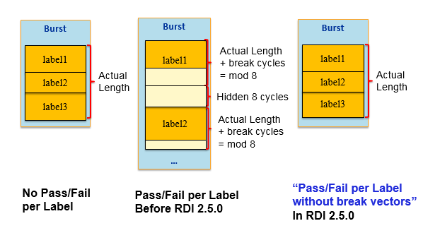

Pass/Fail per label without break vectors
SmartRDI uses the keyword PER_LABEL_FUNC_RESULT_NO_BREAK_VEC in the RDI_Configure file to enable or disable the "Pass/Fail per label without break vectors" feature.
Before SmartRDI 2.5.0, when Pass/Fail per Label is enabled, the burst length is changed by the legacy digital channels' hardware behavior of inserting break vectors.
SmartRDI 2.5.0 provides the keyword PER_LABEL_FUNC_RESULT_NO_BREAK_VEC in RDI_Configure file to support the SmartScale cards (PS1600, PS9GPSSL)'s new feature of Pass/Fail per label without break vectors (BFLM mode).
Starting from SmartRDI 7.5.1, you can also use the command rdi.perLabelFuncPassFailNoBreakVec(bool) to change the flag in test method for enabling or disabling the feature.
Examples
Below is an example of "Pass/Fail per label".
RDI_BEGIN();
rdi.smartVec("1").pin("Pin2").expectData(20,2).execute();
rdi.dc("2").label("pat1").insertSub(10).pin("VI1").vForce(1).enPassFail().execute();
rdi.func("3").label("Label1").execute();
RDI_END();

Functional changes
- Introduced in SmartRDI 2.5.0
- SmartRDI 7.5.1: Added rdi.perLabelFuncPassFailNoBreakVec(bool) to change the flag in test method.